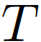
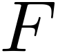
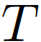
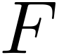

we need to consider three-valued interpretations for propositional logic [Priest:1979]. A three-valued interpretation
we need to consider three-valued interpretations for propositional logic [Priest:1979]. A three-valued interpretation  on
on  is a function
is a function  where the values  and  correspond to the classical truth values
where the values  and  correspond to the classical truth values  and
and  , respectively. The additional truth value
, respectively. The additional truth value  stands for both and is meant to represent a conflicting truth value for a proposition. The function is extended to arbitrary formulas as shown in the following table
stands for both and is meant to represent a conflicting truth value for a proposition. The function is extended to arbitrary formulas as shown in the following table
 , denoted by
, denoted by  if either
if either  or
or  .
The contension inconsistency measure
.
The contension inconsistency measure